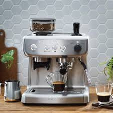

Espressor Manual
Espresoarele manuale oferă control complet asupra procesului de preparare. Acestea necesită experiență, dar sunt preferate de pasionați pentru aromele autentice.
Avantaje:
- Control complet asupra procesului de extracție.
- Design clasic și atractiv.
- Arome bogate și personalizate.
Dezavantaje:
- Dificil de utilizat pentru începători.
- Necesită timp pentru a învăța.
- Costuri mai mari la modelele premium.